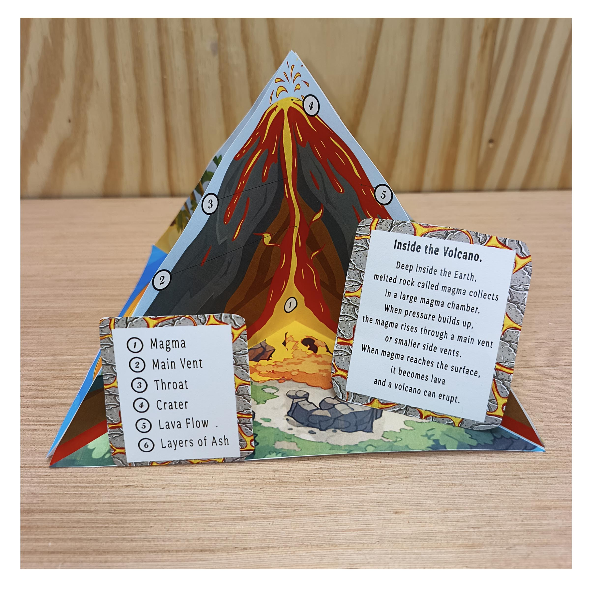
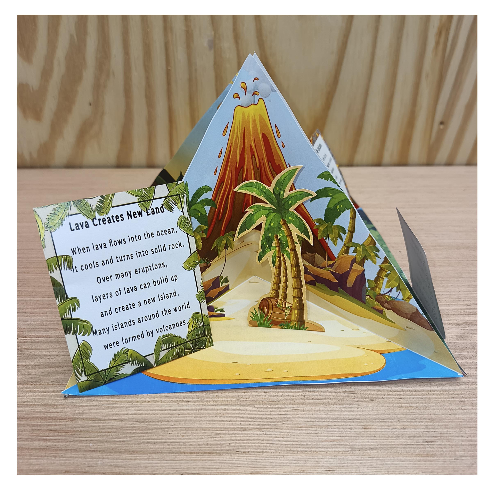
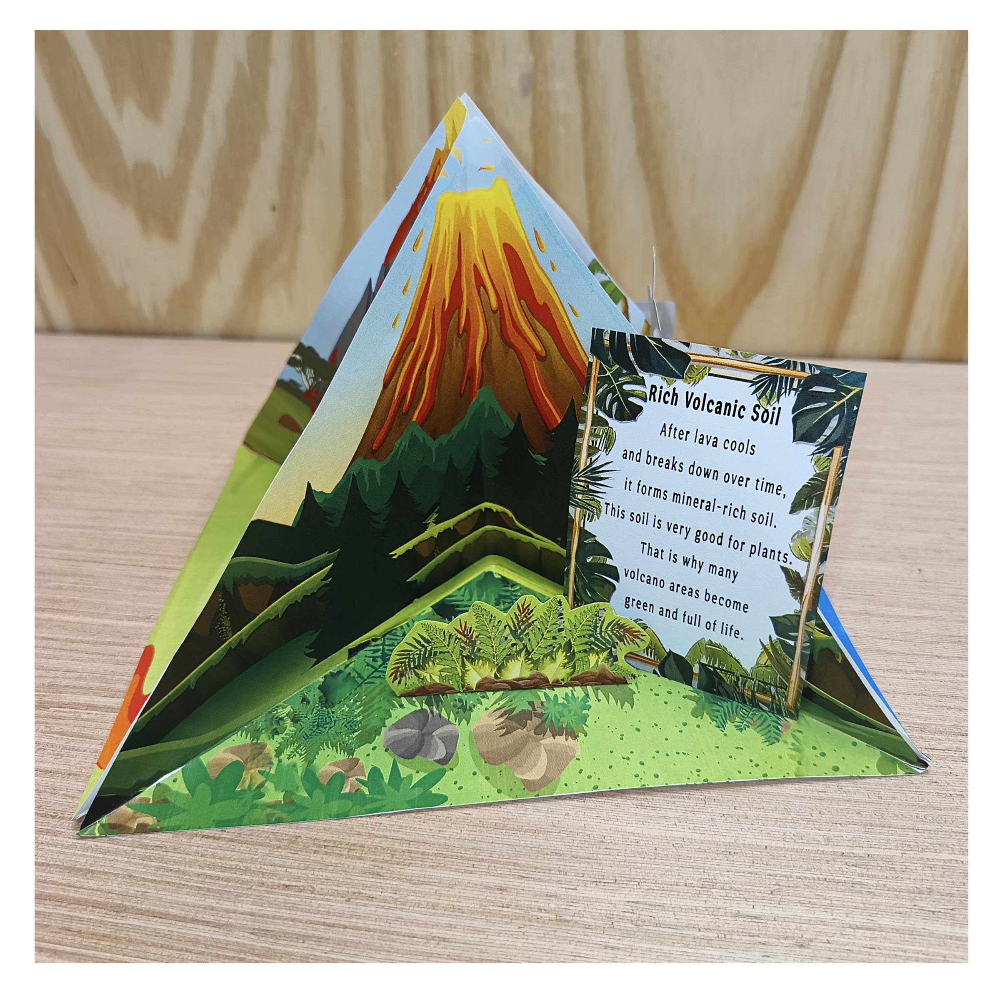
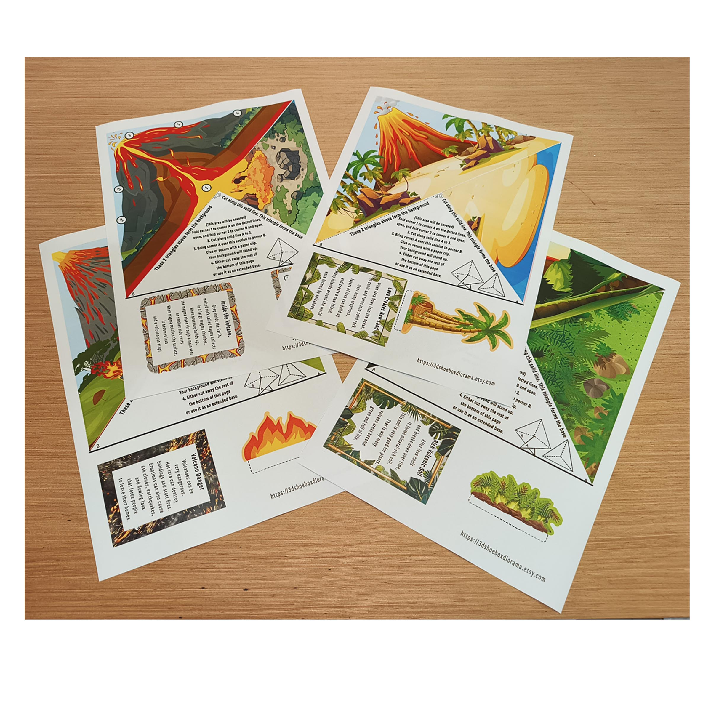
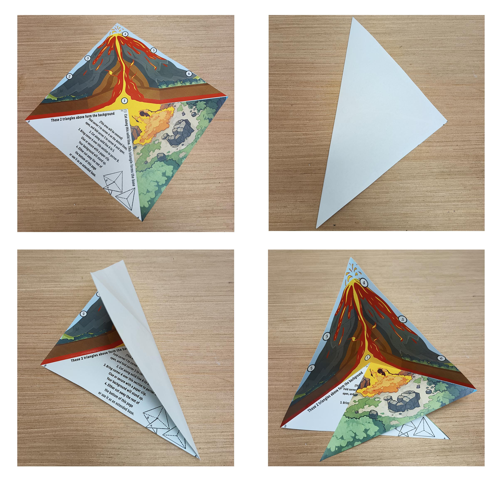
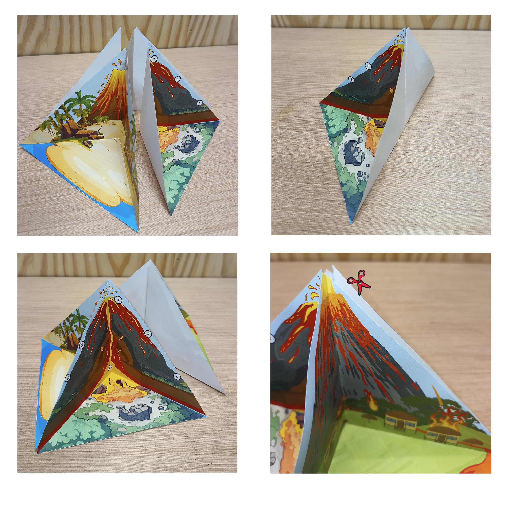
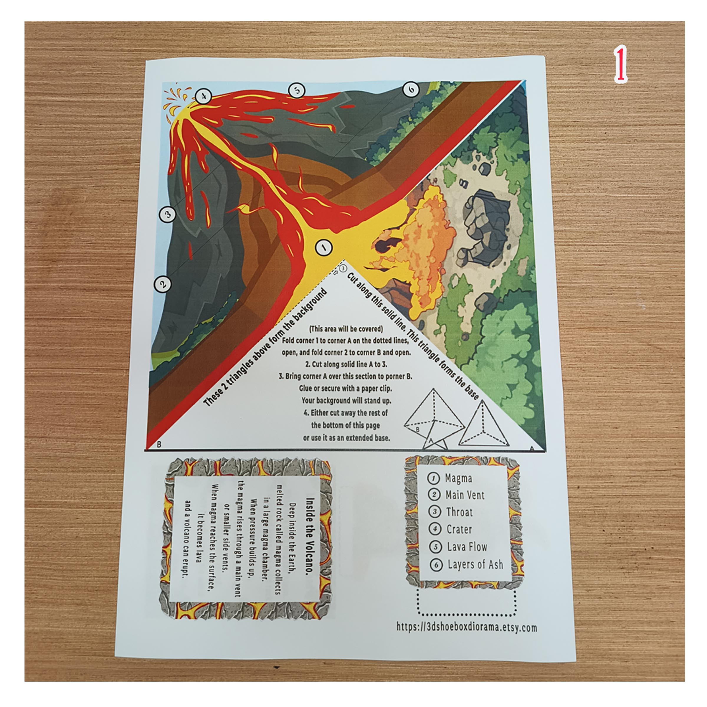
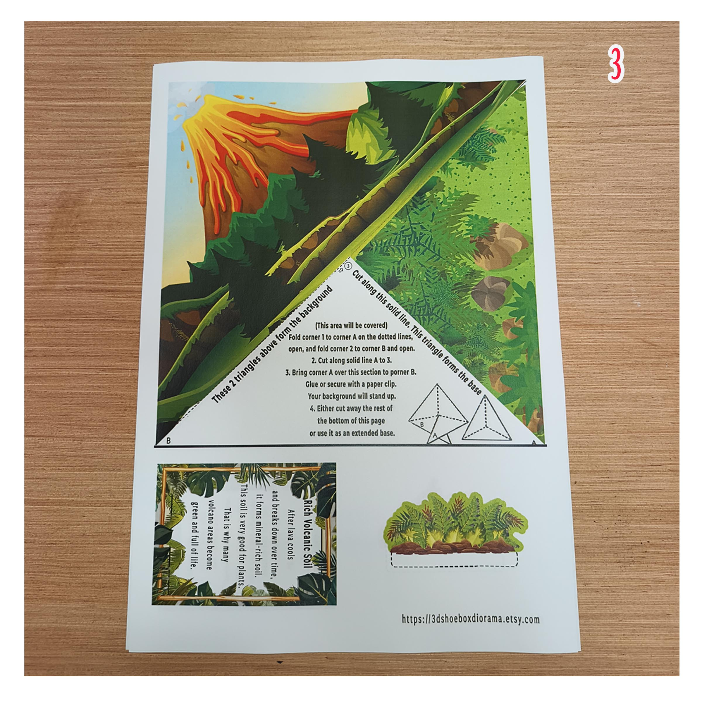
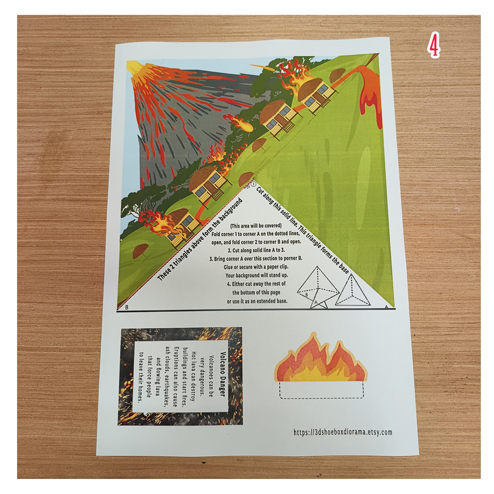

Inside the Volcano
Follow the numbered key to identify magma, the main vent, throat, crater, lava flow and layers of ash.

Build a 3D volcano diorama that reveals what happens inside a volcano and how volcanic activity changes the world around it. Print, cut, fold and bring the illustrated scenes together.
View the Printable Kit on EtsyDigital download · Print and assemble yourself · No physical model shipped
Turn flat printed artwork into a miniature landscape with a story on every side. A numbered cross section opens up the volcano, while the other scenes explore new land, volcanic soil and eruption hazards.
Use it for a school science display, a homeschool earth science topic or a creative afternoon with paper. The English labels and information cards give children a starting point for explaining their model in their own words.
This is a freestanding paper display; no shoebox is needed. It illustrates general volcanic processes, rather than reproducing one specific volcano.
Follow the numbered key to identify magma, the main vent, throat, crater, lava flow and layers of ash.

An island scene and palm tree bring the idea of new land into view. Discuss how lava cools and becomes solid rock.

The plants and trees introduce a conversation about how weathered volcanic material can contribute minerals to soil over time.

Illustrated homes and lava help children discuss how eruptions can affect the surrounding landscape and communities.

The model combines a cutaway diagram with illustrated landscape scenes. Turn it around to move from the volcano’s interior to its effects on the environment.
Raised paper pieces and separate information cards add depth while keeping the explanations visible. The artwork provides the setting; cutting, folding and assembling bring it into three dimensions.
Prepare a printer, paper, scissors and glue. Read the PDF instructions before starting; younger children may need help with cutting and assembly.

Print the illustrated templates and cut out the scenes, cards and separate pieces along the indicated lines.

Follow the folding instructions to give each flat scene its three-dimensional shape.

Glue the sections together and add the paper details and information cards. Practise describing each scene.
Watch the complete model rotate so you can see all four scenes. This Short shows the finished display, rather than a step-by-step assembly tutorial.
A printer, paper, scissors and glue are needed. This is a digital PDF, so you can prepare the printed pieces at home.
Check the Etsy listing for current price and download details.
View the Printable Kit on Etsy



Choose a scene, point to its details and explain one idea. These prompts can help children prepare a short presentation:
For an extra geography activity, choose a real volcano, find it on a map and compare a photograph with the model. Discuss which features are similar and which are different. Check the teacher’s requirements for a school assignment.
No. The kit is a digital PDF to print, cut and assemble yourself. Craft supplies and a finished model are not shipped.
No. This is an educational paper display, not a working eruption experiment.
No. This volcano is a freestanding model made from folded paper sections.
It illustrates general volcano parts and processes. It is not an exact replica of a named volcano.
The labels, information cards and instructions are in English.
Start with the printable templates and turn four paper scenes into a display you can explore from every side.
View the Printable Kit on EtsyDigital PDF · English labels and instructions · Print and assemble yourself